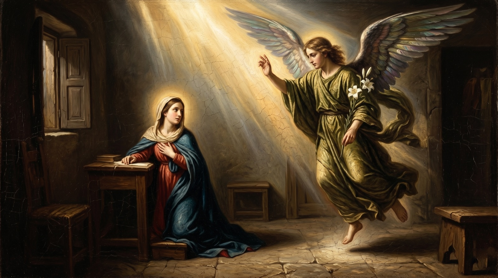
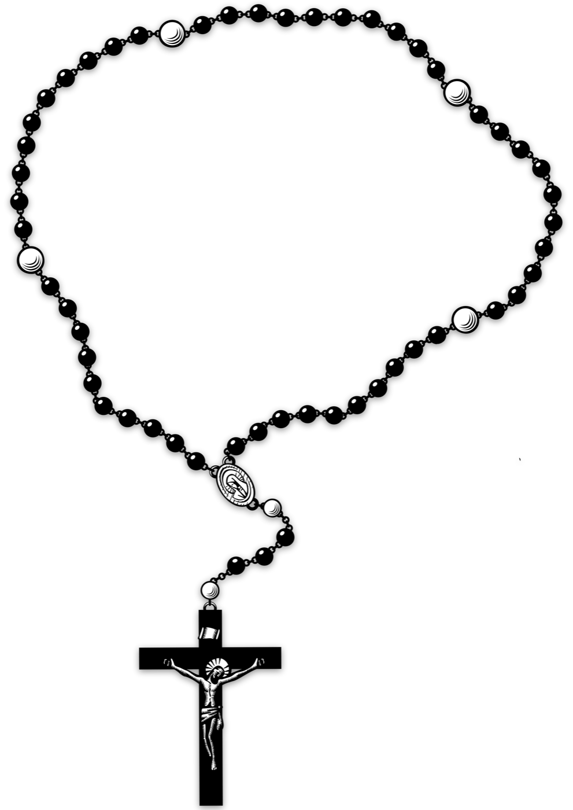
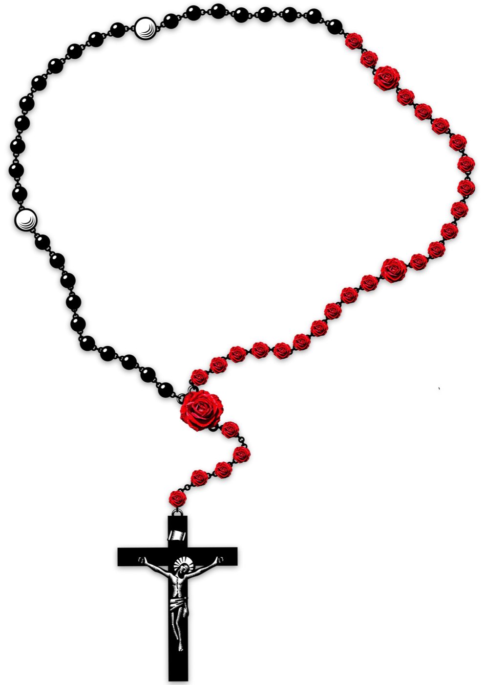
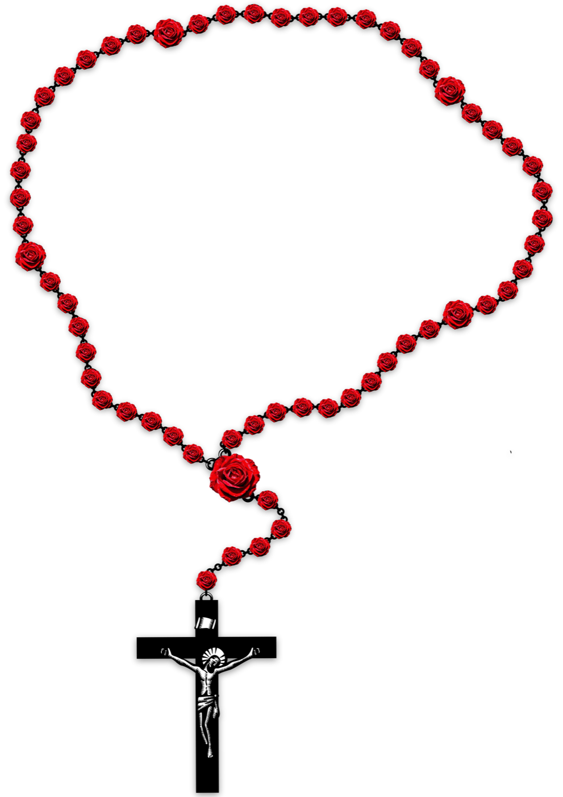

Monday · Saturday
The Joyful
- The Annunciation
- The Visitation
- The Nativity
- The Presentation
- Finding in the Temple
Sixty beads. Five mysteries. A devotion as old as the Church — blooming in your hand, one rose at a time.



Prayed by saints and grandmothers, soldiers and shepherds — the rosary is a practice that asks for nothing but your attention. Prayerful Rosary hands it back to you, bead by bead, in candlelight and in your own time.
Each Hail Mary, each Our Father, each Glory Be coaxes the next bead into a red rose. The rosary on screen blooms as you pray it. No procedural drawing. No simulation. Just a hand-rendered devotion, animated by your own breath.
Each set carries five meditations. The app suggests today’s set automatically — or pray any of the four whenever you like.

Each prayer is voiced. The next bead blooms the instant the prayer ends — no timers, no taps.
Light for Hail Marys. Medium for Our Fathers. Heavy for the Glory Be. The decade lives in your wrist.
Ambient backgrounds drift behind every decade — sorrow in midnight, glory in gold.
A quiet count of the days you returned. Miss one — no shame, just the next.
Carry your petitions through the decade. They stay with the rosary, not on a server.
No accounts. No tracking. No network. The whole devotion lives on your device.
Hail Mary, full of grace, the Lord is with thee. Ave Maria, gratia plena, Dominus tecum.The Angelic Salutation — Luke 1:28
Free to download. Built without ads, without subscriptions, and without a single trip to a server.